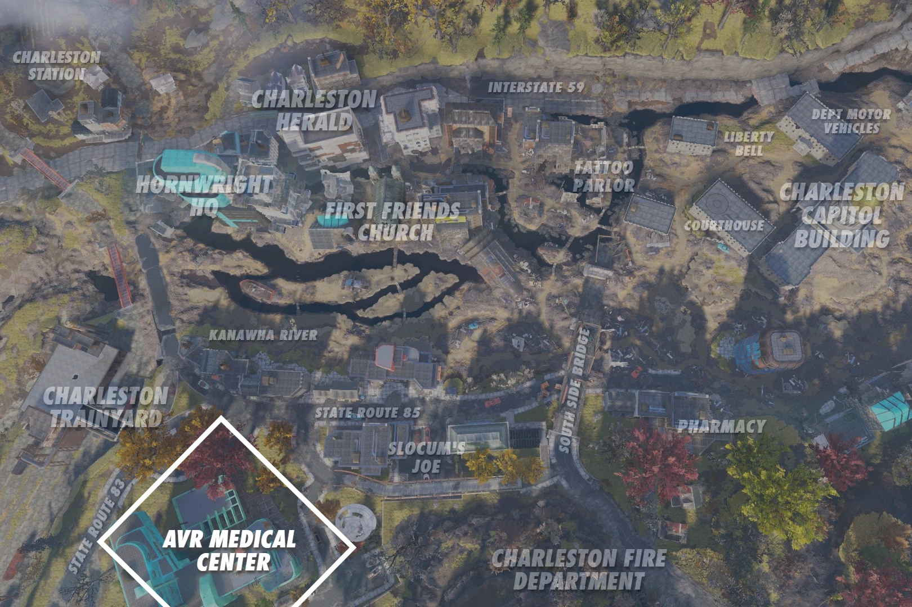
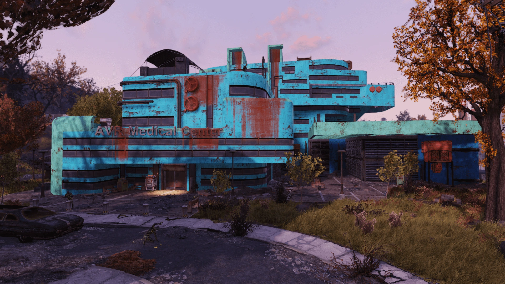
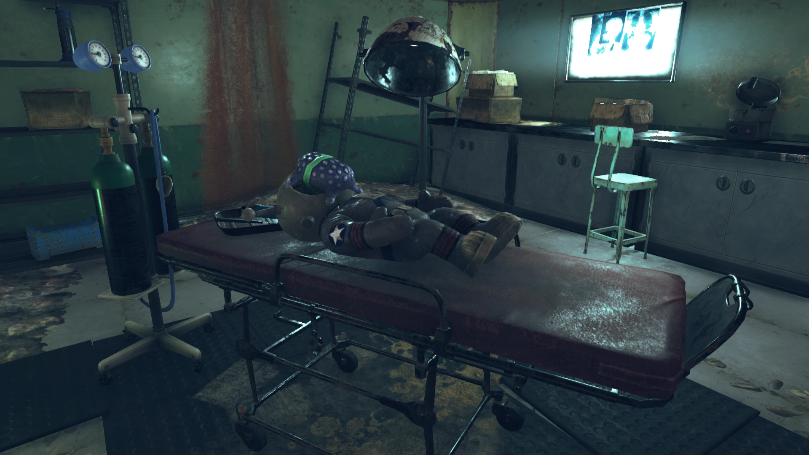
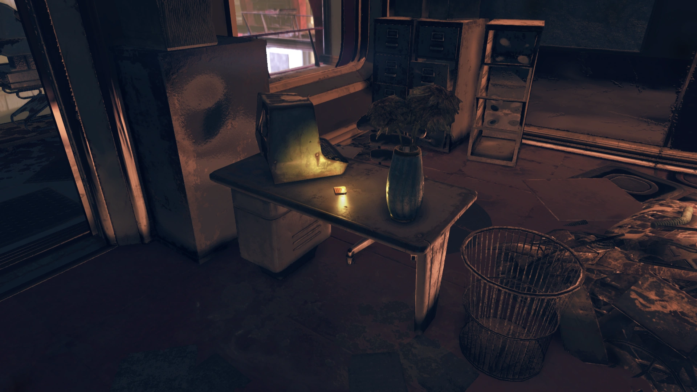
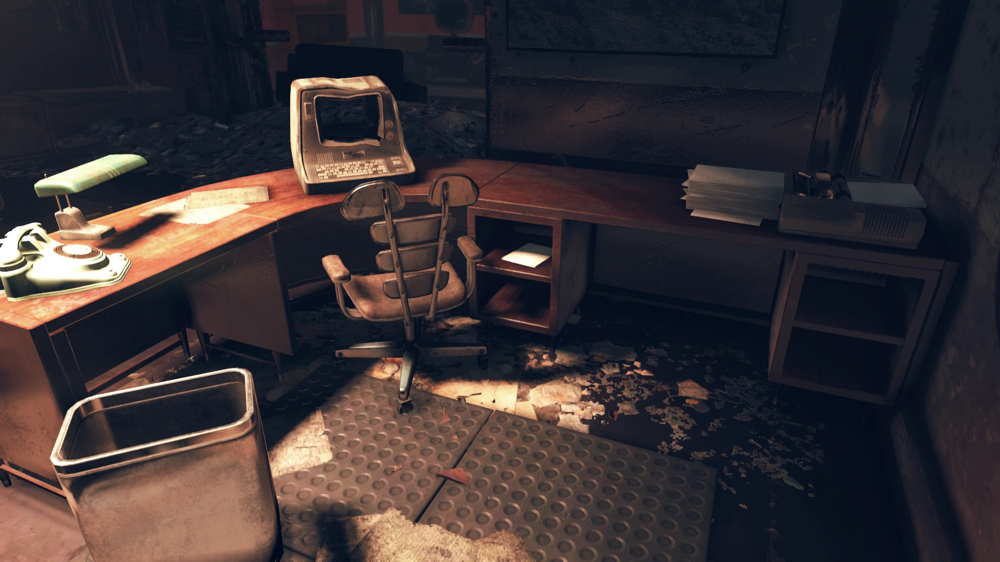

AVR Medical Center
AVRメディカルセンター
概要
AVRメディカルセンターは、アパラチアのチャールストンに位置する大規模な医療施設です。
大戦前からチャールストンの人々に医療を提供していた病院で、戦後はレスポンダーのクレア・ハドソン博士がスコーチ病のワクチン研究の拠点として地下研究室を使用しました。
クエスト「An Ounce of Prevention」の重要なロケーションです。
背景
大戦前
この大規模でモダンな医療施設は、大戦の前後を通じてチャールストンの人々にサービスを提供していました。
大戦前、施設では毎年恒例の「ハッピーアワー」パーティーが開催されていましたが、その騒々しさは有名でした。
ある年のパーティーでは暴力沙汰になり、スタッフ自身がケガの治療をする羽目になりました。
スタッフ主任監督のマーヴィン・ウェクシムは、二度と暴力事件を起こさないよう警告する内部メールを発行しなければなりませんでした。
従業員の未熟さはパーティーに限ったことではありませんでした。
別の従業員ジムは、病院の食事が自分の高い基準に達しないと判断し、それを口実にサーバーに食べ物を投げつけました。
ウェクシムはここでも介入せざるを得ず、最初は名前を出すまいとしましたが、結局一通のメッセージの中でジムの名を晒してしまいました。
中米戦争が終結し、核兵器の報告が病院に届くと、ウェクシムはプロフェッショナルであり続けるよう命令を出しました。
まもなく新しい患者で溢れかえることになると見越していたのです。
混乱の中、鎮痛剤が盗まれ、さらなる窃盗を防ぐため医療品の鍵を締め直さなければなりませんでした。
戦後
新たな患者の中には、グールに変異した人々も含まれ、病院は数百人の生存者を受け入れました。
一部は認知能力を失っており、医療スタッフはそれが放射線による脳への影響なのか、戦争の恐怖による精神的崩壊なのか判断できませんでした。
施設は2082年のクリスマス洪水を受けて放棄されるまで継続的に使用されていました。
時間の経過とともに、病院は略奪され、物資はほとんど残っていません。
ワクチン研究
レスポンダーがスコーチ病に初めて遭遇した際、彼らはその影響と対策の研究を開始しました。
そのために、レスポンダーの医療主任クレア・ハドソン博士がワクチンプロジェクトを主導しました。
安全な研究場所を求め、2096年7月にメディカルセンターの地下に研究室を設置しました。
スカベンジャーに荒らされていたものの、研究室にはまだ使える医療機器が十分に残っていました。
9月にはオートメーションの力を借りて、研究チーム一つ分の仕事を一人でこなせるようになりました。
スコーチ病への耐性が最も高い生物——オオカミ、フェラル・グール、モールラット——の血液サンプルから合成抗体を作ることが突破口でした。
しかし、シンプト・マティックのヒューズが飛んでしまい、研究は行き詰まりました。
10月末には物資調達担当のジェフ・ナカムラと連絡が取れなくなり、進展が不可能に。
ファイア・ブリーザーズがワクチンなしで対スコーチ作戦を開始し、自身も研究を続けられなくなったハドソン博士は、研究の自動化を決断しました。
11月7日、モーガンタウン空港へのスコーチビーストの大群の接近を知り、ハドソン博士は負傷者を助けるため空港へ向かう決意をします。
彼女は「ボタン一つと部品いくつか」でワクチンが完成する研究室を残して去りました。

レイアウト
外観
AVRメディカルセンターは、チャールストンの西端に位置する、明るい色合いの大戦前の病院です。
3階建てに加え、地下室と屋上エリアがあります。
建物への入口は東、北、南の3か所。東の入口の横にはメディカルサプライ自動販売機があり、前の道路にはリムジンが停まっています。
南の入口には駐車場と屋上への非常階段があります。
西側に入口はありませんが、ポセイドン・エネルギー・プラントWV-06を見渡せる小さなピクニックエリアがあります。
内部
すべての廊下は中央の大きなカフェテリアに通じています。
ダイニングブースと独立したテーブル席が配置されており、北壁のドアの近くにはPort-A-Dinerがあります。
このドアの横の階段から上下に移動できます。
1階の床には大きな穴があり、地下を見下ろすことができ、上には吹き抜けがあって2階が見えます。
2階のドアのほとんどは塞がれており、アクセスできるのはオフィスと物置だけです。
地下室は北壁の階段か、床の穴から降りることでアクセスできます。
地下は2部屋で構成されており、天井に穴のある部屋には3基のフュージョン・ジェネレーターがあります（1基だけまだ動作中で、フュージョンコアが入っている場合あり）。
ターミナルでロック解除できる収納ケージ（ハッカー1必要）には工具とジャンクがあります。
隣の部屋はクレア・ハドソン博士の研究室で、ワクチンプロジェクトの拠点です。
デスク上にターミナルがあり、壁のヒューズボックスにはType-Tヒューズが必要です。
シンプト・マティック2台とケミカルステーションが設置されています。
ホロテープ
場所：2階東側のオフィスのデスク上、メインロビーを見渡せる位置
マリア・チャベス：レスポンダー現地報告。マリア・チャベスです。AVRメディカルにいると、いろいろと思い出しますね。母が何年もここで看護師として働いていたんです。
子供の頃、まだ戦前のことですが、何日も病気になったことがありました。物資不足で薬の価格が私たちに払えないほど高くなっていて。
ラッキーなことに、母は看護師であるだけでなく、天性の園芸家でもありました。あらゆるハーブや花のある庭があったんです。母は手作りのハーブ療法で私を治してくれました。
今、病気は蔓延しています。数えきれないウイルスや細菌感染があって、対処法が必要です。空港の病気やケガの難民たちを治療できるものがここで見つかればいいと思っていました。
残念ながら、ここはもうかなり漁り尽くされていて、あまり残っていません。
この不気味な廃病院で基本的に何も得られなかったので、代わりに母の知恵に頼ることにしました。よくある病気の症状を緩和するハーブティーのレシピをまとめました。治療薬ではないけど、何かにはなるでしょう。
さて、これで終わりにしましょう。花を摘みに行かないと。
発見できるノート
場所：3階のオフィスのデスクの棚の中、キーパッドでロックされた部屋の真上
ローレンへ
処方薬のロッカーの在庫を調べるよう言ってくれたのは正解でした。
鎮痛剤が3箱なくなっていることが分かりました。犯人は分かりませんが、これ以上物資を失うわけにはいきません。
コードを011986に変更します。
番号を覚えたら、このメモは処分してね。
メリリン
ターミナルエントリ
AVRメディカル研究室ターミナル — プロジェクト・ジャーナル
クレア・ハドソン博士のワクチン研究記録：
よし、ここからだ。一人の勇敢な医師がスコーチの謎に挑む！なんてヒロイックな！
正直なところ、私は一人で、かなり怖くて、このクレイジーなアイデアがうまくいくかどうか懐疑的です。基本的な理論は十分に堅実だと思うけど、スコーチのDNAを分析し始めたら、何が見つかるか、それを理解できるかさえ分からない。
でもやらなきゃ。やらなければ、私が大切に思う人たちはみんな死んだも同然。スコーチが広がり始めたら？考えたくもない。
少なくともこの研究室が見つかったことには感謝。必要なものはすべて揃っている、機器を全部動かせればの話だけど。ターミナルの再プログラムはできたし、いいスタートね。
分析プログラムを書き始めないと。時間が…くそ、またあの引っ掻くような音。ここはキレイにしたはずなのに、上の階で何かが動き回ってる気がする。急がないと。
全体的に良い進展。少なくとも準備に関しては。分析プログラムを完成させて、さんざん叫んで、罵って、物を蹴った末に、ようやくターミナルとシンプト・マティックを連携させることに成功した。
もっと正確に言うと、ターミナルがシンプト・マティックに命令を怒鳴りつけるようにして、シンプト・マティックがそれに従うようにした。
これから何百もの一次情報、個人的な観察記録、スコーチ病が地元の野生生物にどう影響しているかに関する情報を調べなきゃならない。運が良ければ、10分の1くらいは使えるかもしれない。
今日は短く。なぜかって？実質やったことは一つだけで、研究じゃなかったから。
私の一日は、今朝病院に侵入してきたスコーチの群れから隠れることに費やされた。ほとんどは1階にいたけど、何体かはここまで降りてきた。物音が聞こえてよかった。奴らが研究室を物色し始めた時には、ぎりぎりで物置に隠れ込めたから。
スコーチについてほとんど何も分かっていないことに気づく。何が彼らを動かしている？食べるのか？なぜ自分たち以外のすべてに敵対的なのか？
最終的にスコーチは去った。そして「最終的に」というのは、9時間後のことだ。
二度と物置に足を踏み入れたくない。
オートメーションには本当に感謝。私は一人で小さな研究チーム分の仕事をしている。ここのコンピューターと機械がなければ、このプロジェクトにチャンスはなかった。
プロジェクトについて言えば、スコーチ病への耐性が最も高い生物はモールラット、フェラル・グール、そしてオオカミだ。
それぞれから血液サンプルを採取できれば、遠心分離機にかけて分析プログラムを実行するだけ。その結果データがあれば、合成抗体の生成はかなり簡単なプロセスになるはず。
合成抗体を懸濁液に加えれば、じゃじゃーん、スコーチワクチンの完成。あとはノーベル医学賞の電話を待つだけ。
それがいい知らせ。悪い知らせは、この古いシンプト・マティック。電源を入れたらすぐにヒューズが飛んだ。ジェフが古い鉱山用品店にType-Tヒューズがあるかもしれないと言っている。すぐに確認に行ける人を送ってくれるといいけど。
くそっ！あと少しなのに、行き詰まった。ジェフはほぼ24時間体制で食料調達任務に出ていて、血液サンプルや交換用ヒューズの依頼で連絡が取れない。
ファイア・ブリーザーズは大作戦の準備がほぼ整っていて、私には何も渡せるものがない。ワクチン接種なしでスコーチに立ち向かったら、何が起きるか怖い。
この仕事を終えるチャンスが来ないかもしれないという可能性に向き合わなければならない。でも、誰か他の人ならできるかもしれない。このジャーナルがガイドになるはず。シンプト・マティックに、ワクチン接種が完了した人にメッセージを再生する仕組みも用意しようと思う。
そうすれば、最悪の事態が起きても、私たちが学んだことを他の人が活かせるような道標は残せる。生き残るために。もし…もし私がダメだったとしても。
手遅れだ。私は失敗した。
たった今マリアと無線で話した。あんなにたくさんのスコーチビーストは見たことがないと。空港の上空が暗くなるほどだと。まだ攻撃はしてきていない。スコーチの歩兵部隊を待っているのかもしれない。ずる賢い奴らだ。
もちろん、弾薬もスティムパックも底をつきかけている最悪のタイミング。
それで、私はどうする？
ここで一人、いつかこのワクチンを完成させられるかもしれない。ファイア・ブリーザーズをもう助けることはできないけど、いつか誰かが残っていれば、ワクチンで命を救えるかもしれない。
空港に戻れたら、今日、あるいは明日、戦いが来る時に命を救える。
そして戦いは来る。
くそ。ここにはいられない。一人で旅するのは自殺行為かもしれないけど、大切な人たちに背を向けることはできない。彼らが私を最も必要としている時に。スコーチを止めるという計画の中で自分の役割を果たせなかった私が。
もし誰かがこれを見つけたなら、あの血液サンプルを手に入れてくれ。遠心分離機にセットしてDNA分析プログラムを実行してくれ。あとはほぼ自動だ。
お互いに幸運を。
マーヴィン・ウェクシムのターミナル
宛先：全スタッフ
差出人：マーヴィン・ウェクシム、スタッフ主任監督
皆さん、毎年恒例のハッピーアワーが近づいています。楽しむことは結構ですが、他の人への配慮も忘れないでください。少々騒がしくなるのは分かっていますし、それは構いませんが、周囲の人を意識してください。昨年のような事故は本当に困ります。病院の中にいたのが不幸中の幸いでしたけど。
宛先：全スタッフ
差出人：マーヴィン・ウェクシム、スタッフ主任監督
最近報告のあった問題について述べたいと思います。どうやら一部のスタッフ（名前は伏せますが）は、この病院で調理される食事が自分たちの高い基準に達していないと考えているようです。ここの食事が気に入らなければ、自分で弁当を持ってくるのは自由です。誰も「食べられないスラリー」を食べろと強制していません、ジム。いずれにしても、カウンターの向こうのサーバーに、あるいは誰に対しても食べ物を投げつけるのはNGです。ここは高校じゃないんだ、ジム。
宛先：全スタッフ
差出人：マーヴィン・ウェクシム、スタッフ主任監督
皆さん、落ち着くようお願いする簡潔なメモを送ります。爆弾の報告はもう全員聞いていると思います。怖いのは分かりますが、このドアをくぐって来るすべての人が私たちの助けを頼りにしています。落ち着いて、プロフェッショナルであり続けて、安全に…。
注目の戦利品
- Field report: AVR Medical — ホロテープ、2階東側のオフィスのデスク上
- Stolen supplies — ノート、3階のデスクの棚の中
- Vault-Tecボブルヘッド ×4（メインロビーの天井ライト上、2階南東オフィスのデスク、3階南側オフィス、地下上層研究室）
- 雑誌 ×3（南受付の壊れたオフィス、2階北側のオフィス、東側上層のオフィス）
- フュージョンコア — カフェテリア下のフュージョン・ジェネレーター内
- レシピ — キッチンエリアのカウンター上
関連クエスト
- An Ounce of Prevention — ここのターミナルでスコーチ病のワクチン開発を進める
登場作品
AVRメディカルセンターは『Fallout 76』に登場します。
舞台裏
建物1階の「従業員専用」エリアには、ストレッチャーの上にジャングルズ・ザ・ムーンモンキーのおもちゃが横たわっており、その顔の上にトイ・エイリアンが置かれています。
これは映画『エイリアン』に登場する「フェイスハガー」のオマージュです。
ギャラリー




AVRメディカルセンターは、一見するとただの廃病院ですが、その地下に眠るストーリーは本当に胸を打ちます。
クレア・ハドソン博士の研究ジャーナルを読むと、たった一人で世界を救おうとした科学者の孤独と覚悟が伝わってきます。
特に8月12日の記録——スコーチに9時間物置に閉じ込められるエピソード——は、リアルに恐怖が伝わってきて鳥肌もの。
「二度と物置に足を踏み入れたくない」という一言に、彼女の人間味を感じるんですよね。
そして最後のエントリ。「ボタン一つと部品いくつか」でワクチンが完成する研究室を残して、仲間を助けるために空港へ向かう。
その判断がどれほど辛いものだったか。Falloutの世界では、英雄的な決断は必ずしも報われないからこそ、その重みが増すんです。
大戦前のウェクシムのメールも最高。ジムの名前を「伏せる」と言いながら結局バラしちゃうところとか、Falloutらしいブラックユーモアが効いています。
This article was created by translating and editing AVR Medical Center from Nukapedia: The Fallout Wiki.
Licensed under the Creative Commons Attribution-Share Alike License (CC BY-SA 3.0).
コミュニティ維持のため、寄付を受け付けております。
> COMMENTS